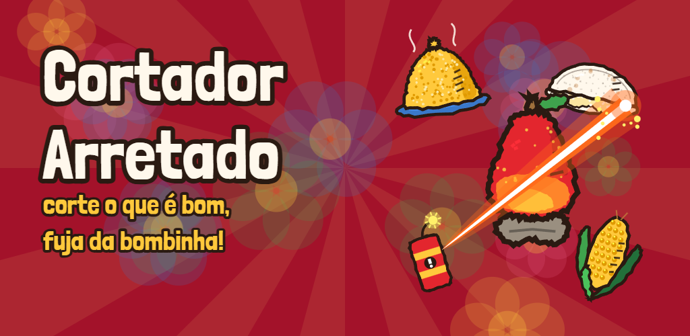
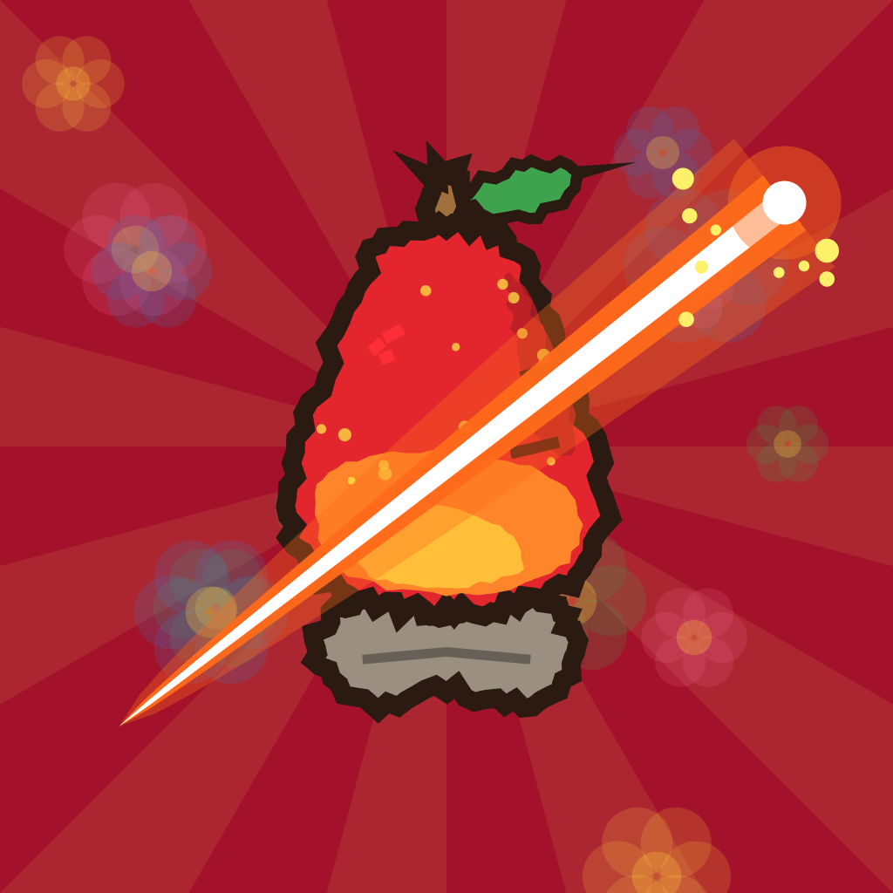

Cortador Arretado
Em breve no Google PlayArrasta o dedo e corta! Cuscuz, caju, tapioca, rapadura, queijo coalho, milho, coco verde, pamonha, bolo de rolo e acarajé voam pela tela — e você corta tudo que é bom. Só não vale encostar na bombinha!